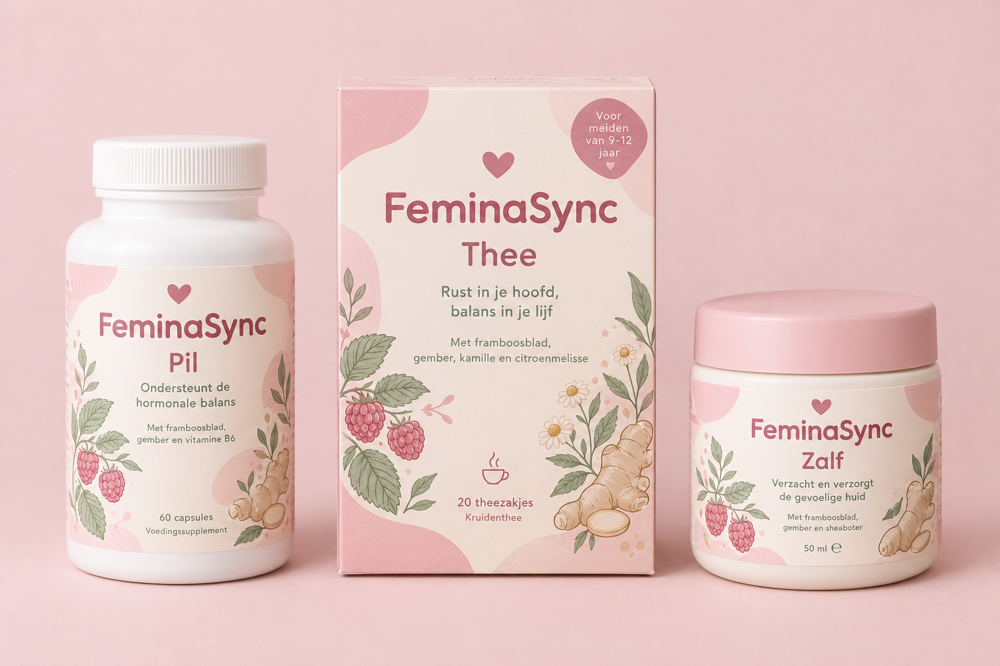
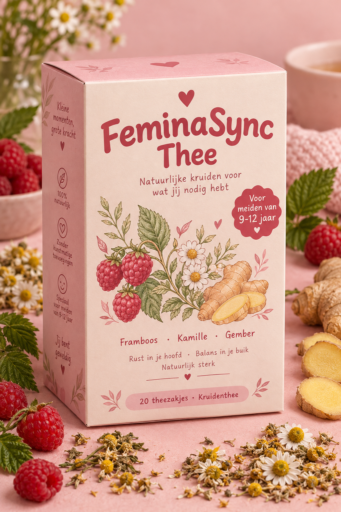

Kruidenproducten die je cyclus zachter maken — bedacht door een vader voor zijn dochter. Surinaamse kruidenwijsheid + moderne kennis, in één lief merk.
Bekijk het starttrio
FeminaSync begon bij een vraag die bijna niemand goed beantwoordt: wat helpt een meisje van 9-12 door haar eerste ongesteldheid heen? Bijna alles in de winkel is gemaakt voor volwassen vrouwen. Deze lijn is bedacht door een vader voor zijn dochter — zacht, eerlijk en duidelijk, met kruiden die al generaties worden gebruikt.
Voor volwassen vrouwen is er EVEENINE: dezelfde recepten in een luxe zwart-gouden jas. Wissel bovenin tussen Meiden en Vrouwen en de hele pagina kleurt mee.
Drie producten die samen een rustige cyclus ondersteunen. Je kunt ze nu voorbestellen (PRE-ORDER) — je betaalt pas als de eerste batch er is, en krijgt altijd je geld terug als die niet doorgaat.
Ondersteunt de hormonale balans met vitex (monnikspeper), cranberry en 10 bacteriestammen. Alleen voor volwassen vrouwen.

Rust in je hoofd, balans in je lijf. Framboosblad, gember, kamille, venkel, kaneel + Surinaamse Blaka Uma en citroengras.
Verzacht en verzorgt: arnica, lavendel, kamille, eucalyptus + Surinaamse Sneki Wiri & Blaka Uma.
PRE-ORDER = voorverkoop: je mailt je bestelling, wij bevestigen met een Tikkie-link, en levering volgt zodra de eerste batch (testrun) binnen is — of je geld terug. Prijzen zijn indicaties uit het FeminaSync-plan.
Je lijf draait elke maand door dezelfde vier fasen. Weet je welke fase het is, dan snap je waarom je je zo voelt — en welk product op welk moment helpt.
Elke plant in onze recepten is gekozen met een reden — klassiek gebruik én moderne kennis.
FeminaSync is geen medicijn en vervangt geen doktersadvies. Heb je hevige pijn of klachten? Praat met een volwassene of huisarts. Kruiden kunnen niet bij iedereen — lees altijd het etiket.